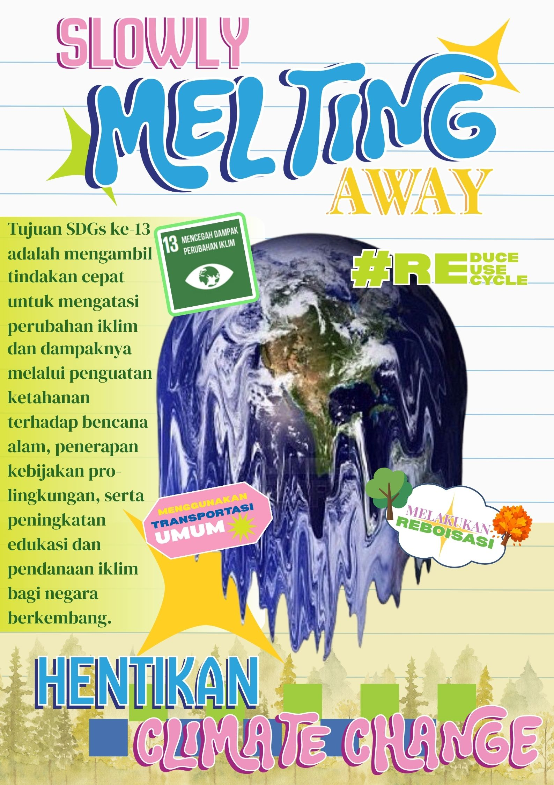
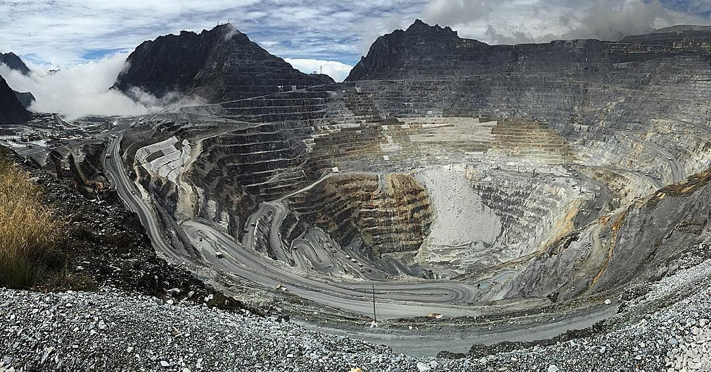
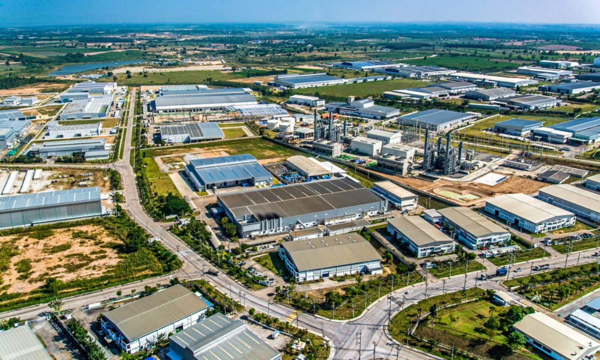
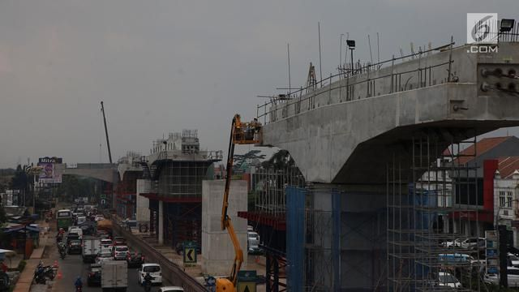

ILMU PENGETAHUAN SOSIAL
Poster dan Pembangunan Konvensional
Poster

Poster SDGs 13 "Penanganan Perubahan Iklim"
Pada poster ini, saya mengangkat isu SDGs ke-13, yaitu Penanganan Perubahan Iklim (Climate Action). Judul utama yang saya pilih adalah "Slowly Melting Away" dan "Hentikan Climate Change". Saya memilih kalimat tersebut karena menggambarkan kondisi bumi yang perlahan mencair akibat pemanasan global. Ilustrasi bola dunia yang meleleh seperti es krim atau lilin menunjukkan bahwa bumi sedang menghadapi krisis iklim yang serius apabila tidak segera dicegah.
SDGs ke-13 memiliki tujuan untuk mengambil tindakan cepat dalam mengatasi perubahan iklim dan dampaknya. Perubahan iklim dapat menyebabkan berbagai permasalahan, seperti meningkatnya suhu bumi, perubahan pola hujan, cuaca ekstrem, banjir, kekeringan, hingga naiknya permukaan air laut. Oleh karena itu, diperlukan kerja sama dari pemerintah, masyarakat, dan berbagai negara untuk mengurangi dampak perubahan iklim.
Upaya tersebut dapat dilakukan melalui penguatan ketahanan terhadap bencana alam, penerapan kebijakan yang ramah lingkungan, serta peningkatan edukasi mengenai perubahan iklim. Selain itu, dukungan berupa teknologi dan pendanaan juga diperlukan, terutama bagi negara berkembang yang membutuhkan bantuan untuk menghadapi dampak perubahan iklim.
Poster ini juga memuat ajakan mengenai beberapa langkah sederhana yang dapat kita lakukan untuk menjaga bumi. Pertama, menerapkan prinsip 3R (Reduce, Reuse, Recycle), yaitu mengurangi penggunaan barang yang menghasilkan sampah, menggunakan kembali barang yang masih layak, dan mendaur ulang barang bekas. Kedua, menggunakan transportasi umum untuk membantu mengurangi emisi gas buang dari kendaraan pribadi.
Terakhir, kita dapat melakukan reboisasi atau penanaman kembali pohon untuk memulihkan kawasan hutan yang rusak. Pohon memiliki peran penting dalam menyerap karbon dioksida dan menjaga keseimbangan lingkungan. Melalui poster ini, saya ingin menyampaikan bahwa menjaga iklim bukan hanya menjadi tanggung jawab pemerintah, tetapi juga merupakan tanggung jawab setiap orang. Perubahan kecil yang dilakukan secara bersama-sama dapat membantu menciptakan lingkungan yang lebih baik.
Pembangunan Konvensional
Pembangunan konvensional merupakan salah satu pendekatan pembangunan yang lebih mengutamakan pertumbuhan ekonomi dan kemajuan fisik dalam waktu relatif singkat. Pendekatan ini biasanya berfokus pada peningkatan pendapatan, pembangunan infrastruktur, kegiatan industri, serta pemanfaatan sumber daya alam untuk mendorong perekonomian.
Meskipun dapat memberikan manfaat seperti terbukanya lapangan pekerjaan dan meningkatnya fasilitas umum, pembangunan konvensional juga dapat menimbulkan masalah apabila tidak memperhatikan kelestarian lingkungan dan kesejahteraan masyarakat. Oleh karena itu, pembangunan sebaiknya tidak hanya dinilai dari pertumbuhan ekonomi, tetapi juga dari dampaknya terhadap kehidupan manusia dan lingkungan.
1. Fokus Utama Pembangunan Konvensional
Fokus utama pembangunan konvensional adalah mempercepat pertumbuhan ekonomi dan meningkatkan kemajuan fisik suatu wilayah. Keberhasilan pembangunan sering kali dilihat dari meningkatnya kegiatan industri, bertambahnya investasi, pembangunan jalan dan gedung, serta meningkatnya pendapatan masyarakat.
Dalam pendekatan ini, sumber daya alam sering dimanfaatkan sebagai bahan utama untuk kegiatan ekonomi. Pembangunan juga cenderung mengejar hasil yang dapat terlihat dalam waktu singkat. Namun, apabila pemanfaatan sumber daya dilakukan secara berlebihan, lingkungan dan kehidupan masyarakat di sekitar wilayah pembangunan dapat terkena dampaknya.
2. Jenis-Jenis Pembangunan Konvensional

Eksploitasi Sumber Daya Alam
Kegiatan pembangunan yang memanfaatkan sumber daya alam dalam jumlah besar, misalnya pertambangan, penebangan hutan, dan perkebunan monokultur berskala luas.

Industrialisasi dan Manufaktur
Pembangunan yang berfokus pada peningkatan kegiatan produksi barang melalui pabrik dan kawasan industri untuk memenuhi kebutuhan pasar dan meningkatkan perekonomian.

Pembangunan Infrastruktur
Pembangunan fasilitas fisik seperti jalan raya, jembatan, gedung bertingkat, pusat perbelanjaan, dan kawasan industri untuk menunjang aktivitas ekonomi.
3. Tujuan Pembangunan Konvensional
Pembangunan konvensional dilakukan untuk meningkatkan kondisi ekonomi dan mempercepat perkembangan suatu wilayah. Beberapa tujuan utamanya antara lain:
- Meningkatkan pendapatan nasional melalui kegiatan industri, perdagangan, dan investasi.
- Mempercepat pertumbuhan ekonomi agar kegiatan produksi dan perekonomian semakin berkembang.
- Menciptakan lapangan pekerjaan baru dalam sektor industri, pertambangan, dan konstruksi.
- Memodernisasi fasilitas fisik seperti jalan, gedung, transportasi, dan kawasan industri.
- Meningkatkan daya saing wilayah agar mampu menarik lebih banyak kegiatan usaha dan investasi.
4. Tiga Ciri-Ciri Pembangunan Konvensional
01. Berorientasi pada Keuntungan Ekonomi Jangka Pendek
Pembangunan lebih mengutamakan hasil ekonomi yang dapat diperoleh dalam waktu singkat. Pertumbuhan Produk Domestik Bruto (PDB), keuntungan perusahaan, dan peningkatan investasi menjadi ukuran penting dalam menentukan keberhasilan pembangunan.
02. Eksploitatif terhadap Sumber Daya Alam
Sumber daya alam dimanfaatkan dalam jumlah besar untuk memenuhi kebutuhan industri dan kegiatan ekonomi. Jika tidak disertai pengelolaan yang bertanggung jawab, kegiatan ini dapat menyebabkan berkurangnya sumber daya alam, kerusakan hutan, pencemaran, dan hilangnya habitat makhluk hidup.
03. Bersifat Top-Down atau Terpusat
Perencanaan dan pengambilan keputusan pembangunan umumnya lebih banyak ditentukan oleh pemerintah atau pihak pemodal besar. Akibatnya, masyarakat lokal terkadang memiliki kesempatan yang terbatas untuk menyampaikan pendapat atau ikut menentukan keputusan yang memengaruhi lingkungan tempat tinggalnya.
5. Pengukuran Keberhasilan
Keberhasilan pembangunan konvensional umumnya diukur menggunakan indikator ekonomi dan pembangunan fisik yang dapat dihitung. Beberapa indikator yang sering digunakan adalah:
- Pertumbuhan PDB: melihat peningkatan nilai barang dan jasa yang dihasilkan suatu negara dalam periode tertentu.
- Pendapatan per kapita: memperkirakan rata-rata pendapatan penduduk suatu negara.
- Nilai investasi: melihat jumlah modal yang ditanamkan untuk mengembangkan kegiatan ekonomi.
- Jumlah infrastruktur: menghitung pembangunan jalan, jembatan, gedung, pabrik, dan fasilitas lainnya.
Namun, indikator tersebut belum tentu menggambarkan kesejahteraan seluruh masyarakat. Pertumbuhan ekonomi yang tinggi tidak selalu berarti semua penduduk memperoleh manfaat yang sama. Oleh karena itu, perlu juga diperhatikan pemerataan pendapatan, kualitas hidup, kesehatan masyarakat, dan kondisi lingkungan.
6. Risiko Sosial dan Lingkungan
Pembangunan konvensional dapat memberikan dampak positif maupun negatif. Dampaknya bergantung pada cara pembangunan direncanakan, lokasi pelaksanaan, serta bagaimana sumber daya alam dan masyarakat di sekitarnya dikelola.
Dampak Positif bagi Masyarakat
- Membuka lapangan pekerjaan baru dalam sektor industri, konstruksi, pertambangan, dan perdagangan.
- Meningkatkan pendapatan sebagian masyarakat melalui bertambahnya kesempatan kerja dan kegiatan ekonomi.
- Menyediakan fasilitas umum yang lebih modern, seperti transportasi, akses energi, jalan raya, dan pusat pelayanan.
- Mempermudah aktivitas sehari-hari melalui pembangunan sarana dan prasarana.
Dampak Negatif bagi Masyarakat
- Meningkatkan kesenjangan sosial dan ekonomi apabila keuntungan pembangunan hanya dinikmati kelompok tertentu.
- Menimbulkan masalah kesehatan akibat pencemaran udara, air, dan lingkungan tempat tinggal.
- Mengurangi ruang hidup masyarakat lokal akibat pengalihan fungsi lahan untuk industri atau infrastruktur.
- Menimbulkan konflik apabila masyarakat tidak dilibatkan dalam proses perencanaan pembangunan.
Dampak Positif bagi Lingkungan
- Penataan kawasan perkotaan dan industri dapat menjadi lebih terstruktur.
- Pembangunan sistem sanitasi dan drainase buatan dapat membantu pengelolaan kawasan terbangun.
- Infrastruktur pengelolaan air dan limbah yang dirancang dengan baik dapat membantu menjaga kebersihan lingkungan.
Dampak Negatif bagi Lingkungan
- Deforestasi atau penggundulan hutan akibat pembukaan lahan untuk industri, perkebunan, dan infrastruktur.
- Kerusakan ekosistem dan berkurangnya keanekaragaman hayati karena habitat tumbuhan dan hewan terganggu.
- Pencemaran tanah, air, dan udara akibat limbah industri serta kegiatan produksi.
- Peningkatan emisi gas rumah kaca yang dapat memperburuk perubahan iklim.
- Meningkatkan risiko bencana ekologis seperti banjir dan tanah longsor apabila kondisi lingkungan tidak dikelola dengan baik.